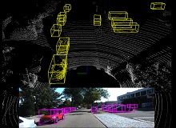
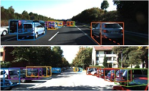
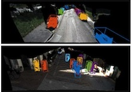
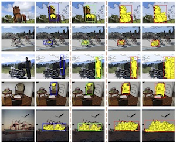

Ph.D. Candidate, 2012-2017 (expected) Department of Electronic Engineering, Tsinghua University
Contactcxz.thu AT gmail DOT com
|  | Multi-View 3D Object Detection Network for Autonomous Driving Xiaozhi Chen, Huimin Ma, Ji Wan, Bo Li, Tian Xia International Conference on Computer Vision and Pattern Recognition (CVPR), 2017 (Spotlight) Paper / Demo(52M) / 3D Evaluation Code / Bibtex KITTI train/val split used in 3DOP/Mono3D/MV3D |
|  | Monocular 3D Object Detection for Autonomous Driving Xiaozhi Chen, Kaustav Kunku, Ziyu Zhang, Huimin Ma, Sanja Fidler, Raquel Urtasun International Conference on Computer Vision and Pattern Recognition (CVPR), 2016 Paper / Supplement / Project Page / Demo / KITTI Results / Bibtex |
|  |
3D Object Proposals using Stereo Imagery for Accurate Object Class Detection Xiaozhi Chen*, Kaustav Kunku*, Yukun Zhu, Huimin Ma, Sanja Fidler, Raquel Urtasun to appear in Transactions on Pattern Analysis and Machine Intelligence (TPAMI), 2017 Paper / Bibtex 3D Object Proposals for Accurate Object Class Detection Xiaozhi Chen*, Kaustav Kunku*, Yukun Zhu, Andrew Berneshawi, Huimin Ma, Sanja Fidler, Raquel Urtasun Neural Information Processing Systems (NIPS), 2015 Paper / Supplement / Project Page / Demo / KITTI Results / Bibtex |
|  |
Boundary-Aware Box Refinement for Object Proposal Generation Xiaozhi Chen, Huimin Ma, Chenzhuo Zhu, Xiang Wang, Zhichen Zhao Neurocomputing, 2017 Paper / Bibtex Improving Object Proposals with Multi-Thresholding Straddling Expansion Xiaozhi Chen, Huimin Ma, Xiang Wang, Zhichen Zhao International Conference on Computer Vision and Pattern Recognition (CVPR), 2015 Paper / Project Page / Bibtex |